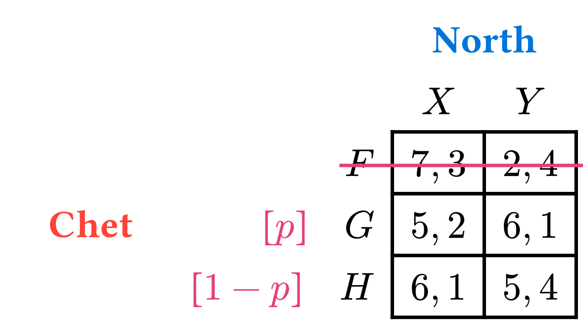

Projects
Fields of Interest
Within economics, my research interests include behavioral, game theory, and data science applications. Outside of economics, there isn’t a lot that doesn’t interest me. Linguistics, computer science, and pure mathematics are domains that I have been consistently interested in over the years.
Academic Research
Working Papers
Time-Varying Time Preferences
With Mike Kuhn and M. Steven Holloway (Draft available)
Dynamic inconsistency in intertemporal choice has long been considered a hallmark of non-exponential discounting. Recent work has challenged this view from a variety of perspectives, including the view that time variance –shifting preferences between measurement dates– can also explain apparent preference reversals. While a nascent literature identifies time-variance and demonstrates its role in explaining time-inconsistency, we lack both a model that allows time-variance to tractably interact with other properties of time preference, and a longitudinal study of sufficient depth to identify such a model. In this paper, we develop the ``nested exponential'' discount function which is general with respect to time-invariance, time-consistency, and stationarity. The function nests both exponential discounting and a version of present-biased discounting within its parameter space, enabling transparent model selection at both the aggregate and subject levels. We evaluate time-invariance and the performance of the nested exponential model in a 12-week longitudinal study featuring seven surveys. Our elicitations give us unprecedented precision in estimating dynamic inconsistency, non-stationarity, and time-variance. We find that subjects in our study exhibit significant decreasing patience over the course of the study, and that time-variance explains roughly 72% of time-inconsistent choices in our data. This does not mean our data are best-explained by exponential discounting plus preference drift: hyperbolicity is a key feature of our data, and it is well captured by the nested exponential function.
Trust and AI
With Jiabin Wu, Ethan Holdahl, and Tanner Bivins (Draft available)
In this study, we experimentally explore the impact of AI as a supportive tool for players in a two-player trust game. The game begins with the trustee sending a message to the trustor. In certain scenarios, the trustee is aided by the large language model (LLM) ChatGPT in composing this message. In other scenarios, the trustor uses AI to interpret the message from the trustee, or both players may have access to AI assistance. Our findings indicate that when the trustee utilizes AI as a helper, it enhances cooperation with the trustor. Interestingly, this improvement in cooperation is not attributed to AI's superior messaging skills. Instead, when the trustee has AI assistance, it may encourage the trustor to scrutinize the trustee's message more closely. The detailed scrutiny by the trustor, and potentially the trustee's awareness of this scrutiny, aligns the beliefs of the trustor and the trustee, thereby fostering an environment that encourages the development of trust.
Multiple Lottery Lists
Publications
Market Failure
With Van Kolpin (forthcoming)
Forthcoming in The Elgar Encyclopedia on the Economics of Competition, Regulation and Antitrust
Other Projects

Prettier Game Theory
As someone who has taught college level courses in game theory on multiple occasions, there is a disappointing lack of resources available to format (typeset) ones own games. Two related projects help to fill this gap and improve resources for educators looking for similar materials. One is simply a hub for housing links, pointers, and information about said resources. The other is partial solution: a work-in-progress typst package I made for typesetting normal form games. You can check out the general-information repository here and the Typst package gametheoryst here
LOST Stats
I contributed to the Library of Statistical Techniques (LOST). Specifically, I authored the original version of the page on Autoregressive Integrated Moving Average (ARIMA) models, found here
Want more?
Check out my GitHub!
References
Footnotes
Top level classification of regions within a nation-state. E.g. States, Provinces Oblasts, etc.↩︎